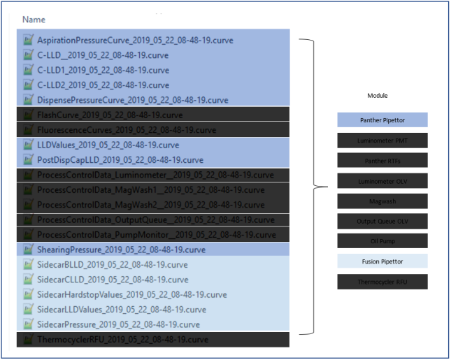
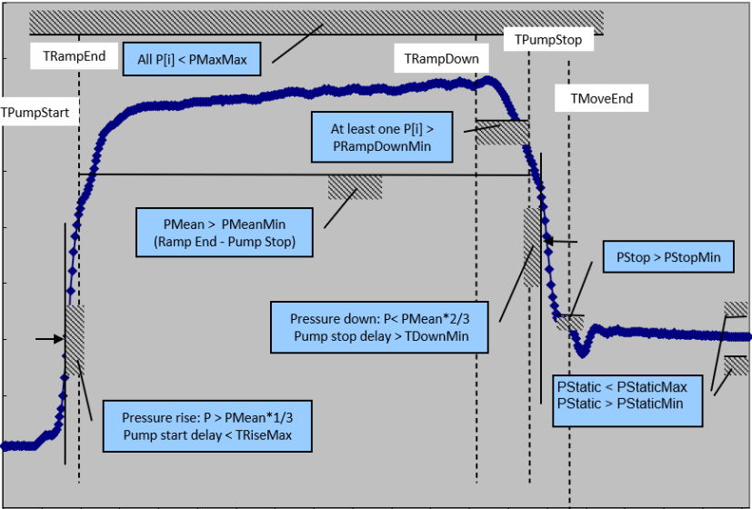
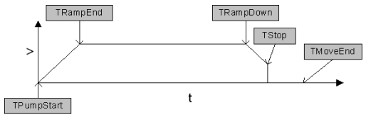
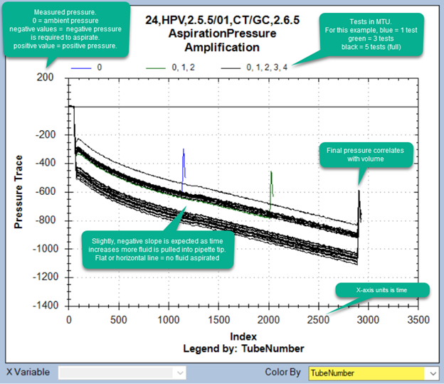
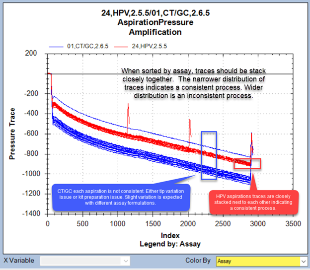
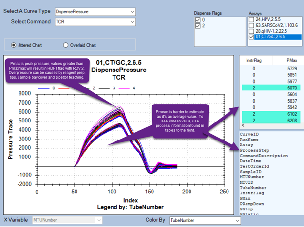
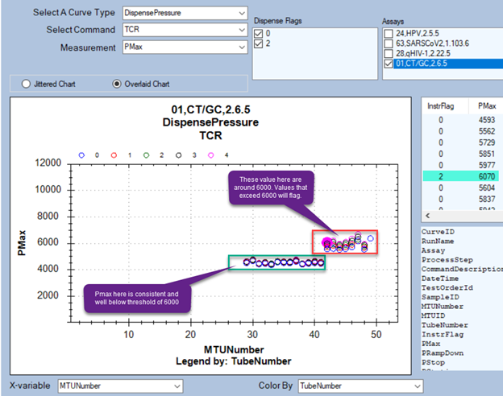
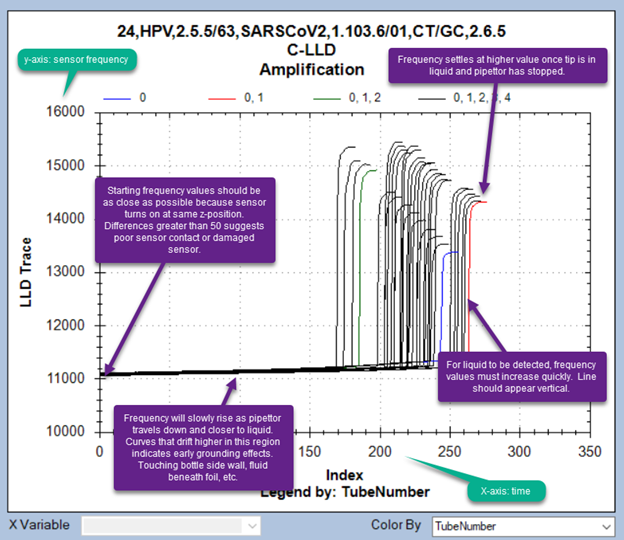
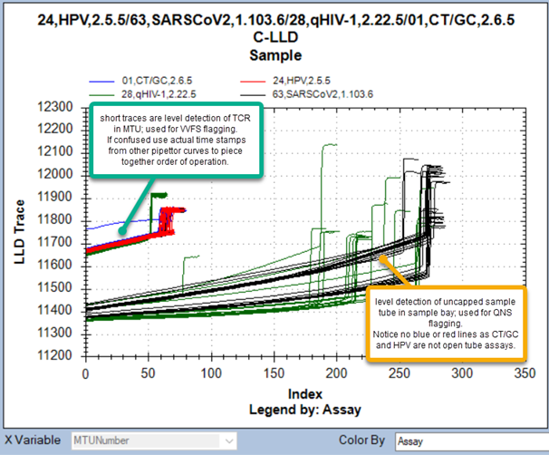

Pipettor Curves
Pipettor Curves contains these sections:
Background
Pipettor curves are recorded readings of sensor outputs for specific processes.
Limits are set for each specific assay, to account for differences in formulation and volume needs.
The pipettor collects data and analyzes it in real time, then transmits it from the pipettor to the COP and over to the local workstation. Then the data is written into the curve file.
Short version: Pipettor curves are generated when pipettor is performing level sense, aspirate, and dispense.
Long version: A pipettor will pick a tip, move to aspirate location, performs level sense fluid (C-LLD, LLDValues). A shearing step (ShearingPressure) is performed for capped sample tubes, aspirates fluid (AspirationPressureCurve), spits back to prime dispense (DispensePressureCurve), pulls a travelling air gap, then moves to dispense location.
-
For reagent, fluid will be dispensed (DispensePressureCurve) in tubes with tests.
-
For sample, a bubble pop (C-LLD1) then TCR|FCR (C-LLD) will be measured, then sample will be dispensed another bubble pop (C-LLD2) and final measurement(PostDispenseCapLLD).
Pipettor then moves to tip eject location and ejects tip into tip chute.
Processes performed with Fusion reagent pipettor will have a “Sidecar” prefix.
References for detailed explanation:
-
MDD_FW_APP_6319
-
CDD_FW_6319_APE_ZSPip-EC
-
MTU Storyboard
List of curve files for Panther and Fusion Pipettors.

Figure 1 - Curve folder view of pipettor related curve files.
“x” indicates reagent type. E.g. TCR, TER, FCR, FER, Amplification, Probe, Promoter, Sample, etc.
Table 1 - File type, XY axis and use summary.
|
File Type |
X-axis unit |
Y-axis unit |
Typical uses |
|---|---|---|---|
|
File Type |
Xaxis unit |
Yaxis unit |
Typical uses |
|
AspirationPressureCurves |
Time |
Pressure |
CLT, RAFx |
|
C-LLD |
Time |
Frequency |
Used for liquid level detection |
|
C-LLD1 |
Time |
Frequency |
Pre-dispense bubble pop, MTU only |
|
C-LLD2 |
Time |
Frequency |
Post-dispense bubble pop, MTU only |
|
DispensePressureCurve |
Time |
Pressure |
RDFx + RDV value |
|
LLDValues |
MTU |
Encoder Steps |
Measures fluid volume, RVHx, RVHLx, VVFS |
|
PostDispCapLLD |
Time |
Frequency |
Used for liquid level detection in MTU |
|
ShearingPressure |
Time |
Pressure |
PFS, overpressure |
|
SidecarBLLD |
Time |
Pressure |
Fusion oil pack – RVHO, RBEO |
|
SidecarCLLD |
Time |
Frequency |
Level sense recon buffer - RBxxRB |
|
SidecarHardstopValues |
MTU |
Encoder steps |
CHF, MHF |
|
SidecarLLDValues |
MTU |
Encoder steps |
Oil, Recon level sense values |
|
SidecarPressure |
Time |
Pressure |
Fusion pipettor aspiration and dispense |
AspirationPressureCurve, DispensePressureCurve, ShearingPressure, and SideCarPressure
X-axis is time scale. Pipettor firmware will maximize data collection, so shorter aspiration times can have longer traces as the firmware is acquiring data more quickly. In these instances, it’s better to inspect the final pressure. Y-axis is pressure units. Each pressure unit is 0.57 Pa. “RDV” (reagent dispense verification) parameters define the pressure trace and are set by assay. While “D” represents dispense; the term “RDV” parameters applies to both aspiration and dispense. The following parameters can be tested against:

Figure 2 - Dispense signal and thresholds , see MDD for full details.

Figure 3 - Time stamps at pipette plunger move profile . TStop = TPumpStop
RDV parameters can be set for AspirationPressureCurve, DispensePressureCurve and SideCarPressure. RDV parameters can not be set for ShearingPressure. Shearing pressure monitors the shearing step for sample tubes with caps.
Aspiration begins after a successful level sense or successful move to set aspiration depth and shearing step has completed (e.g. pierceable sample tube). Aspiration pressure curve is recorded and processed at the pipettor.
During aspiration, the process control at this step is not tightly regulated to prevent excessive flagging. The only processing flag directly related to aspiration pressure event is the CLT flag. This flag is triggered when the pressure exceeds -28,672 counts (a pressure count unit is 0.57 Pa) and exists to protect the pressure sensor.
The next two figures display the same data, using two different groupings methods.

Figure 4 - Aspiration curve, default view is colored by Tube Number in MTU. As most MTUs will use all 5 tubes, the majority of the traces are black.

Figure 5 - Same data set as Figure 4, aspiration curve color grouped by "assay" reveals inconsistent aspiration pressure with AC2 assay. As the variability is within assay, the issue could be kit related or caused by tip issue. Amplification reagent happens to mix easily so reagent prep is not the issue, which leaves the consumable tip.
Dispenses, include spitbacks. Spitbacks are performed to prime the pipette tip after reagent aspiration with reagent specific process control disabled. Spitbacks are expected to not be as uniform as actual dispense in MTU. Here are the parameters for AC2 – TCR dispense found from an assay definition file or “sequence” file:
<RDVParams>
<PMaxMax>6000</PMaxMax>
<PMaxMin>0</PMaxMin>
<PRampDownMin>0</PRampDownMin>
<PStopMin>0</PStopMin>
<PStaticMin>0</PStaticMin>
<PStaticMax>0</PStaticMax>
<PMeanMin>2200</PMeanMin>
<TRiseMaxStartDelay>0</TRiseMaxStartDelay>
<TDownMinStopDelay>0</TDownMinStopDelay>
<THalfMaxPeriodMin>0</THalfMaxPeriodMin>
<PRefType>Undefined</PRefType>
</RDVParams>
Each of the parameters are assigned a bit value. If the parameter is triggered the bit is enabled. Pmax error = RDV2, Pmean error = RDV64. It is possible to trigger multiple parameters. From the above set RDV parameters notice only PMaxMax and PMeanMin are defined. PMaxMax = maximum pressure value cannot exceed 6000. PMeanMin = minimum mean pressure must be greater than 2200. Below is an example of Pmax triggered, generating RDV 2 flags. (Dispense Flag 2, InstrFlag 2 are synonymous with RDV 2).

Figure 6 - Pmax triggered for AC2, when Pmax values exceed 6000. By scanning the Pmax column in curve trend it's easy to determine the cutoff without opening the assay definition XML file.

Figure 7 - Summary plot view of dispense pressure – TCR – Pmax. Can clearly see a transition around MTU = 42.
The first line of data is the header line, which explains the data within the column. Commonly used columns:
CurveID: is not a column present in raw data. This value is assigned by curve trend software.
Assay: as previously mentioned process parameters are tied to assay formulation.
ProcessStep or CommandDescription: determines fluid type
DateTime: UTC time
TestOrderID: test order of sample
SampleID: barcode of sample tube
MTUNumber: MTU # since PantherMain was started
MTUID: MTU barcode
InstrFlag: RDV code
Pmax: Peak pressure
Pmean: Average pressure from from time of TRampEnd through TPumpStop
C-LLD, C-LLD1, C-LLD2, PostDispCapLLD, and SidecarCLLD
Liquid level detection can be performed using barometric or capacitive sensor. Capacitive is normally used as it increases pipettor life span as it reduces the number of plunger cycles. Barometric is used for oil which cannot be detected using capacitance. Normal frequency values of capacitive sensor when pipettor is at z-home is shown in service software. A normal value is in the range of 9,000Hz to 14,000Hz. The closer the diti is to ground plane, the higher the frequency reading. The maximum value is 24,000Hz

Figure 8 - Basics of any capacitive curve.

Figure 9 - Basics of any barometric curve.
The first line of data is the header line, which explains the data within the column. Commonly used columns for LLD values.
CurveID: is not a column present in raw data. This value is assigned by curve trend software.
Assay: as previously mentioned, process parameters are tied to assay formulation.
ProcessStep or CommandDescription: determines fluid type.
DateTime: UTC time.
TestOrderID: test order of sample.
SampleID: barcode of sample tube.
MTUNumber: MTU # since PantherMain was started.
MTUID: MTU barcode.
LLDValues, SidecarLLDValues, and SidecarHardstopValues
These values represent z-axis motor steps (20 steps = 1mm, a step is the minimum movement unit of measure). LLDValues are used to determine if reagent inventory levels are acceptable range otherwise reagent volume too high, reagent volume too low errors or bottle empty errors are generated. For open tube assays, a minimum fill height in sample tube is required, if not, a quantity insufficient (QNS) error will be generated. It is important to note, the implementation of liquid detected height reporting before aspiration is as follows:
Liquid not detected: detected height of fluid fails inventory. reported height is where fluid was detected. No aspiration step is performed.
Liquid detected: detected height of fluid meets inventory requirement. Pipettor will track down into fluid during aspiration. Reported height is final pipettor position after aspiration and not the initial height where fluid was detected.
This rule also applies to reagents.
LLDValues also record the pre- and post-sample dispense heights within the MTU to help determine if enough fluid was dispensed; a VVFS error will be generated when this is incorrect. SidecarLLDValues, does the same but for the Fusion side of the instrument.
SidecarHardstopValues is used when capacitive and barometric level sensing are ineffective. Fusion pipettor will detect the bottom of the MTU or cartridge by driving to a hard stop. The pipettor will then move away a set distance and aspirate fluid.
The first line of data is the header line, which explains the data within the column. Commonly used columns for LLD values:
CurveID: is not a column present in raw data. This value is assigned by curve trend software.
Assay: as previously mentioned, process parameters are tied to assay formulation.
ProcessStep or CommandDescription: determines fluid type.
DateTime: UTC time.
TestOrderID: test order of sample.
SampleID: barcode of sample tube
MTUNumber: MTU # since PantherMain was started.
MTUID: MTU barcode.
LldResultType: reports if level detection was successful or not.
LldHeight: measured fluid height from software defined bottom of container.
 button at the top of the page to send feedback, comments, or change requests.
button at the top of the page to send feedback, comments, or change requests.